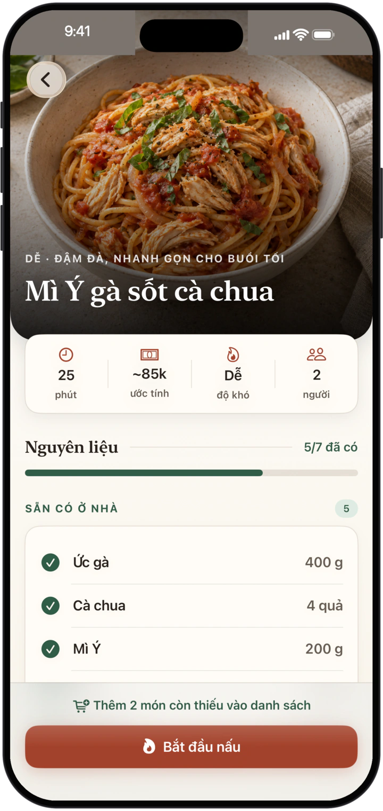
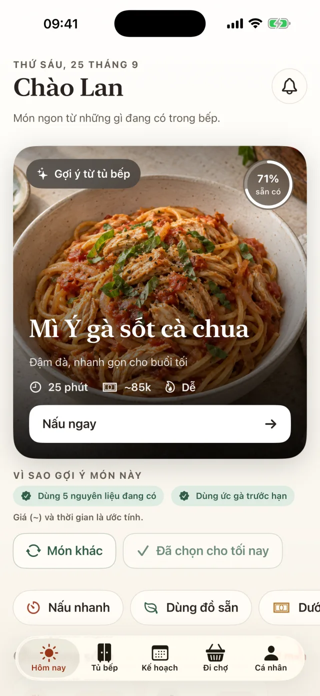
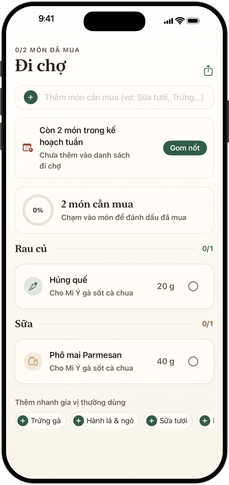

Hỗ trợ
Bếp Nhà
Món ngon từ những gì đang có trong bếp.



Bếp Nhà gợi ý bữa tối từ những nguyên liệu bạn đang có, giúp lên kế hoạch, đi chợ và nấu từng bước.
Câu hỏi thường gặp
Dữ liệu của tôi được lưu ở đâu?
Trên thiết bị của bạn. Bếp Nhà không có tài khoản. Chỉ khi bạn bật “AI nâng cao” trong Cá nhân, yêu cầu và danh sách nguyên liệu mới được gửi tới dịch vụ AI để tạo gợi ý món. Bạn có thể tắt bất cứ lúc nào.
Làm sao xoá dữ liệu?
Vào Cá nhân → Dữ liệu → Xoá toàn bộ dữ liệu, hoặc gỡ ứng dụng.
Làm sao tắt nhắc nhở?
Vào Cá nhân → Nhắc nhở, hoặc tắt thông báo cho Bếp Nhà trong Cài đặt của iPhone.
Giá và thời gian nấu có chính xác không?
Đó là ước tính để tham khảo. Hãy luôn kiểm tra nhãn thực phẩm nếu bạn bị dị ứng.
Cần trợ giúp hoặc muốn góp ý?
Mở một yêu cầu trên GitHub, kèm phiên bản ứng dụng (Cá nhân → Giới thiệu) và các bước gặp vấn đề.